เมื่อมีโจทย์ที่ชัดเจนแล้ว ทีมก็พร้อมที่จะทำงานในขั้นตอน “Develop” ซึ่งเป็นขั้นตอนการพัฒนาแนวคิดหรือทางเลือกย่อยๆ จำนวนมากสำหรับการบริการ การทำงานในขั้นตอนนี้ต้องอาศัยความคิดสร้างสรรค์แบบอเนกนัย (Divergent Thinking) ซึ่งมีเป้าหมายเพื่อสร้างทางเลือกหรือแนวคิดการออกแบบบริการให้ได้จํานวนมากที่สุดมีความหลากหลายและสามารถตอบสนองความต้องการหรือเป้าหมายของโครงการอย่างครบถ้วน เนื่องจากการบริการมีความเกี่ยวข้องกับคนหลายฝ่าย การร่วมคิดร่วมสร้าง (Co-creation) จึงถือเป็นหัวใจสําคัญในการพัฒนาแนวคิดการบริการอย่างมีประสิทธิภาพ การร่วมคิดร่วมสร้าง (Co-creation) เอื้อให้ทีมสามารถพัฒนางานออกแบบจากมุมมองและความเชี่ยวชาญของผู้เกี่ยวข้องทุกฝ่าย รวมทั้งตัวแทนกลุ่มเป้าหมายด้วย

< Service Design Process
การพัฒนาแนวคิดสามารถทําได้โดยอาศัยวิธีการและเครื่องมือการออกแบบสองกลุ่มใหญ่ๆ กลุ่มแรกคือเครื่องมือสร้างกรอบแนวคิด (Framework) เช่น ตารางสร้างแนวคิด (Concept Generation Matrix) และ Morphological Charts ที่กระตุ้นให้ทีมสร้างสรรค์ทางเลือกหรือแนวคิดการบริการตามประเด็นสำคัญที่เป็นผลสรุปมาจากการวิจัยในขั้นตอนก่อนหน้านี้ วิธีการออกแบบกลุ่มนี้ควรใช้ร่วมกับเครื่องมือกลุ่มที่สอง คือกลุ่มที่ช่วยสื่อสารและกระตุ้นให้เกิดการคิดสร้างสรรค์ควบคู่กันไปในขณะทำงานเป็นทีม เช่น
การสร้างแผนภูมิแนวคิด (Solution Diagramming) และการเล่าเรื่อง (Scenario Design) วิธีการและเครื่องมือทั้งสองกลุ่มนี้ สามารถนำมาใช้ในการร่วมคิดร่วมสร้าง (Co-creation) ได้ และเอื้อให้ทุกฝ่ายสามารถคิดสร้างสรรค์ร่วมกันอย่างเป็นระบบ สามารถสื่อสารความคิดต่างๆ ให้เป็นรูปธรรม รวมทั้งกระตุ้นให้เกิดการแลกเปลี่ยนความคิดเห็นและสร้างแนวคิดต่อยอดซึ่งกันและกันอย่างมีประสิทธิภาพ

 
